2026 National 5 Physics - Section 1 questions
Source: Scottish Qualifications Authority (SQA) / Qualifications Scotland. This is a StemInteract HTML companion, not an official HTML edition. Selectable text is supplied alongside original page images. Use the images or original PDF for equations, powers, fractions, vector notation, tables and diagrams; text extraction cannot fully preserve mathematical layout.
Jump to a question
PDF page 1
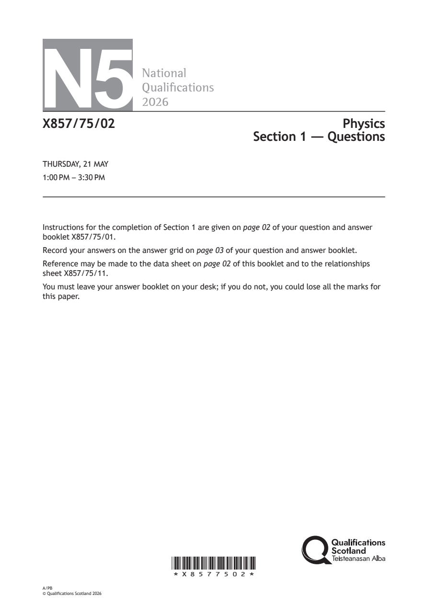
Selectable page text
N5
National
Qualications
2026
X857/75/02 Physics
Section 1 — Questions
THURSDAY, 21 MAY
1:00 PM – 3:30 PM
Instructions for the completion of Section 1 are given on page 02 of your question and answer
booklet X857/75/01.
Record your answers on the answer grid on page 03 of your question and answer booklet.
Reference may be made to the data sheet on page 02 of this booklet and to the relationships
sheet X857/75/11.
You must leave your answer booklet on your desk; if you do not, you could lose all the marks for
this paper.
*X8577502*
A/PB
© Qualifications Scotland 2026PDF page 2
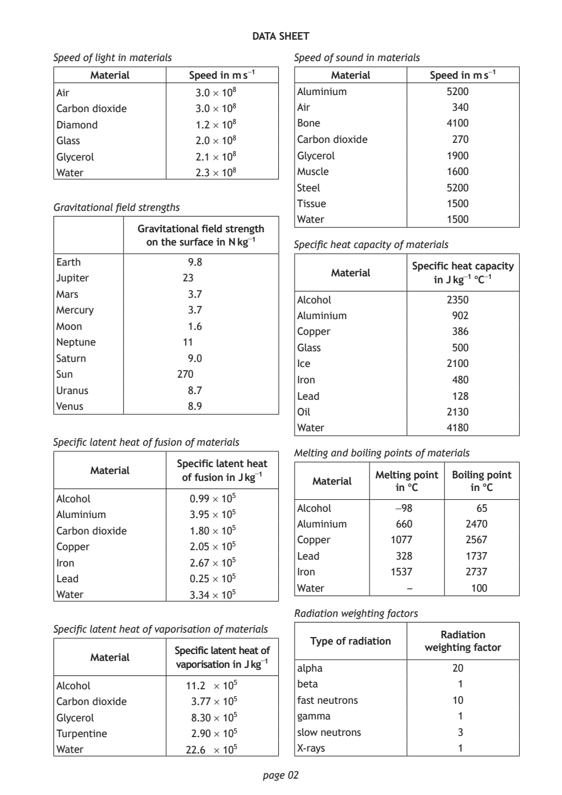
Selectable page text
DATA SHEET
Speed of light in materials Speed of sound in materials
Material Speed in m s⁻¹ Material Speed in m s⁻¹
Air 3.0 × 10⁸ Aluminium 5200
Carbon dioxide 3.0 × 10⁸ Air 340
Diamond 1.2 × 10⁸ Bone 4100
Glass 2.0 × 10⁸ Carbon dioxide 270
Glycerol 2.1 × 10⁸ Glycerol 1900
Water 2.3 × 10⁸ Muscle 1600
Steel 5200
Tissue 1500
Gravitational field strengths
Water 1500
Gravitational field strength
on the surface in N kg⁻¹ Specific heat capacity of materials
Earth 9.8
Specific heat capacity
Material
Jupiter 23 in J kg⁻¹ °C⁻¹
Mars 3.7
Alcohol 2350
Mercury 3.7
Aluminium 902
Moon 1.6
Copper 386
Neptune 11
Glass 500
Saturn 9.0
Ice 2100
Sun 270
Iron 480
Uranus 8.7
Lead 128
Venus 8.9
Oil 2130
Water 4180
Specific latent heat of fusion of materials
Melting and boiling points of materials
Specific latent heat
Material
of fusion in J kg⁻¹ Melting point Boiling point
Material
in °C in °C
Alcohol 0.99 × 10⁵
Alcohol −98 65
Aluminium 3.95 × 10⁵
Aluminium 660 2470
Carbon dioxide 1.80 × 10⁵
Copper 1077 2567
Copper 2.05 × 10⁵
Lead 328 1737
Iron 2.67 × 10⁵
Iron 1537 2737
Lead 0.25 × 10⁵
Water – 100
Water 3.34 × 10⁵
Radiation weighting factors
Specific latent heat of vaporisation of materials
Radiation
Type of radiation
weighting factor
Specific latent heat of
Material
vaporisation in J kg⁻¹
alpha 20
Alcohol 11.2 × 10⁵ beta 1
Carbon dioxide 3.77 × 10⁵ fast neutrons 10
Glycerol 8.30 × 10⁵ gamma 1
Turpentine 2.90 × 10⁵ slow neutrons 3
Water 22.6 × 10⁵ X‑rays 1
page 02PDF page 3
Section 1, Question 1Section 1, Question 2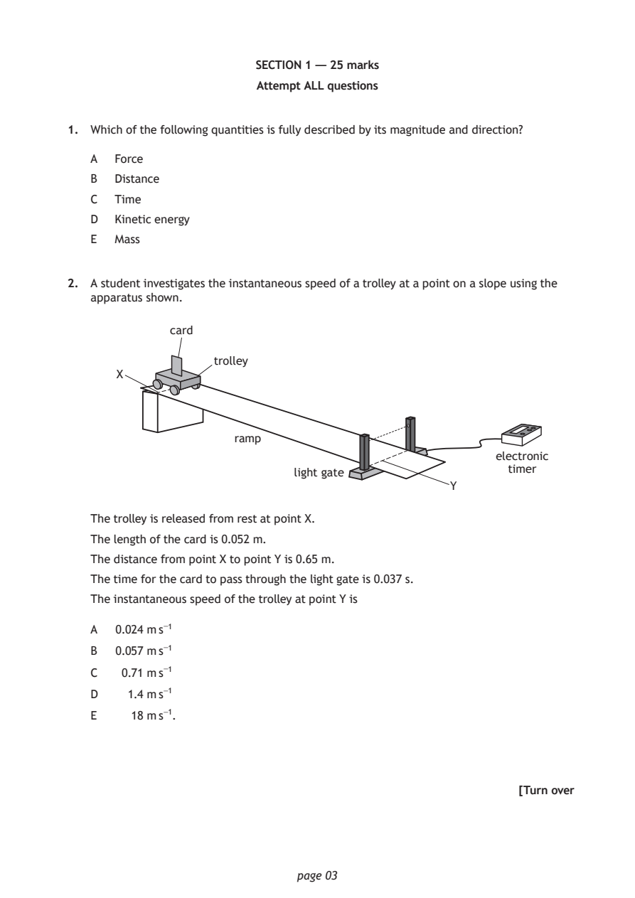
Selectable page text
SECTION 1 — 25 marks
Attempt ALL questions
1. Which of the following quantities is fully described by its magnitude and direction?
A Force
B Distance
C Time
D Kinetic energy
E Mass
2. A student investigates the instantaneous speed of a trolley at a point on a slope using the
apparatus shown.
card
trolley
X
ramp
electronic
timer
light gate
Y
The trolley is released from rest at point X.
The length of the card is 0.052 m.
The distance from point X to point Y is 0.65 m.
The time for the card to pass through the light gate is 0.037 s.
The instantaneous speed of the trolley at point Y is
A 0.024 m s⁻¹
B 0.057 m s⁻¹
C 0.71 m s⁻¹
D 1.4 m s⁻¹
E 18 m s⁻¹.
[Turn over
page 03PDF page 4
Section 1, Question 3Section 1, Question 4Section 1, Question 5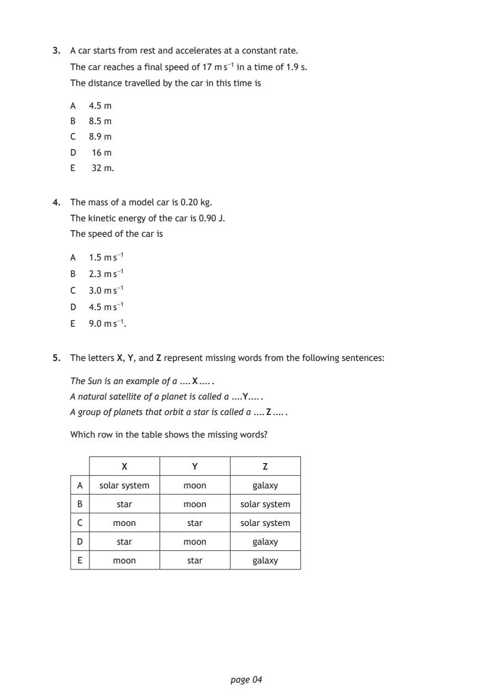
Selectable page text
3. A car starts from rest and accelerates at a constant rate.
The car reaches a final speed of 17 m s⁻¹ in a time of 1.9 s.
The distance travelled by the car in this time is
A 4 .5 m
B 8 .5 m
C 8 .9 m
D 16 m
E 32 m.
4. The mass of a model car is 0.20 kg.
The kinetic energy of the car is 0.90 J.
The speed of the car is
A 1.5 m s⁻¹
B 2.3 m s⁻¹
C 3.0 m s⁻¹
D 4.5 m s⁻¹
E 9.0 m s⁻¹.
5. The letters X, Y, and Z represent missing words from the following sentences:
The Sun is an example of a .... X .... .
A natural satellite of a planet is called a ....Y.... .
A group of planets that orbit a star is called a .... Z .... .
Which row in the table shows the missing words?
X Y Z
A solar system moon galaxy
B star moon solar system
C moon star solar system
D star moon galaxy
E moon star galaxy
page 04PDF page 5
Section 1, Question 6Section 1, Question 7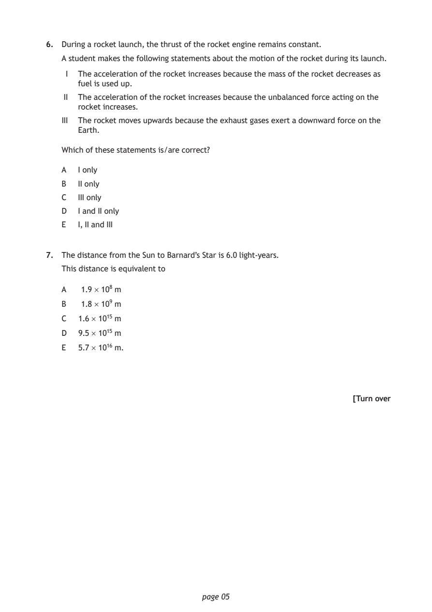
Selectable page text
6. During a rocket launch, the thrust of the rocket engine remains constant.
A student makes the following statements about the motion of the rocket during its launch.
I The acceleration of the rocket increases because the mass of the rocket decreases as
fuel is used up.
II The acceleration of the rocket increases because the unbalanced force acting on the
rocket increases.
III The rocket moves upwards because the exhaust gases exert a downward force on the
Earth.
Which of these statements is/are correct?
A I only
B II only
C III only
D I and II only
E I, II and III
7. The distance from the Sun to Barnard’s Star is 6.0 light‑years.
This distance is equivalent to
A 1.9 × 10⁸ m
B 1.8 × 10⁹ m
C 1.6 × 10¹⁵ m
D 9.5 × 10¹⁵ m
E 5.7 × 10¹⁶ m.
[Turn over
page 05PDF page 6
Section 1, Question 8Section 1, Question 9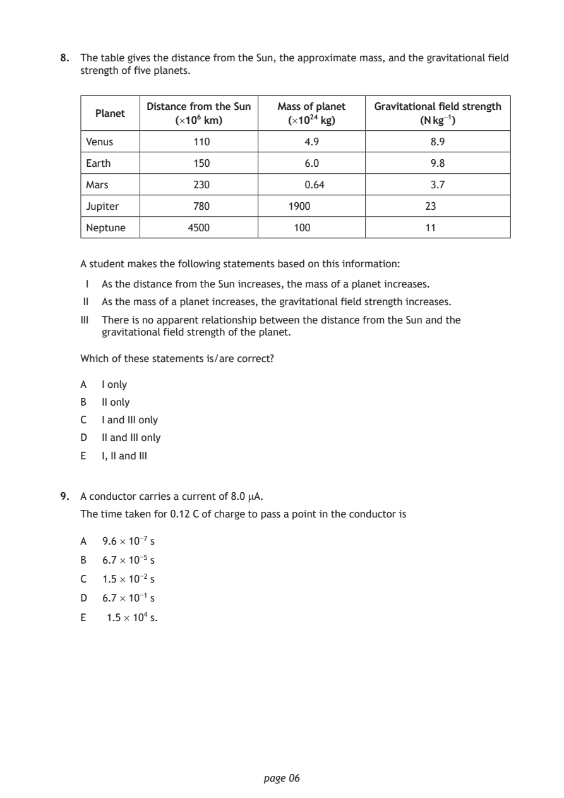
Selectable page text
8. The table gives the distance from the Sun, the approximate mass, and the gravitational field
strength of five planets.
Distance from the Sun Mass of planet Gravitational field strength
Planet
(×10⁶ km) (×10²⁴ kg) (N kg⁻¹)
Venus 110 4.9 8.9
Earth 150 6.0 9.8
Mars 230 0.64 3.7
Jupiter 780 1900 23
Neptune 4500 100 11
A student makes the following statements based on this information:
I As the distance from the Sun increases, the mass of a planet increases.
II As the mass of a planet increases, the gravitational field strength increases.
III There is no apparent relationship between the distance from the Sun and the
gravitational field strength of the planet.
Which of these statements is/are correct?
A I only
B II only
C I and III only
D II and III only
E I, II and III
9. A conductor carries a current of 8.0 μA.
The time taken for 0.12 C of charge to pass a point in the conductor is
A 9.6 × 10⁻⁷ s
B 6.7 × 10⁻⁵ s
C 1.5 × 10⁻² s
D 6.7 × 10⁻¹ s
E 1.5 × 10⁴ s.
page 06PDF page 7
Section 1, Question 10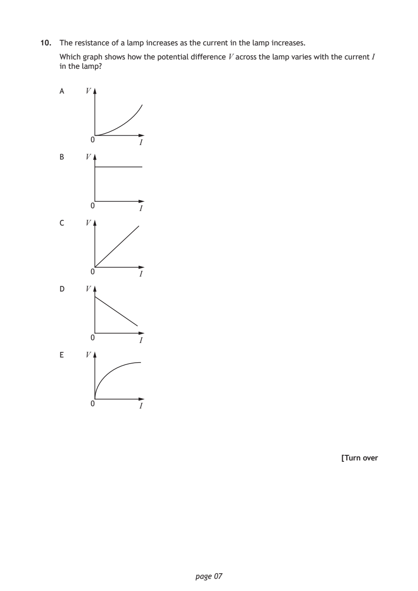
Selectable page text
10. The resistance of a lamp increases as the current in the lamp increases.
Which graph shows how the potential difference V across the lamp varies with the current I
in the lamp?
A V
0
I
B V
0
I
C V
0
I
D V
0
I
E V
0
I
[Turn over
page 07PDF page 8
Section 1, Question 11Section 1, Question 12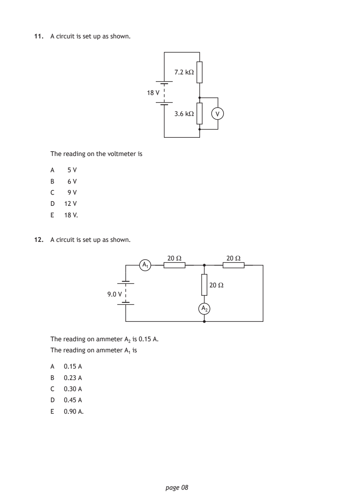
Selectable page text
11. A circuit is set up as shown.
7.2 kΩ
18 V
3.6 kΩ V
The reading on the voltmeter is
A 5 V
B 6 V
C 9 V
D 12 V
E 18 V.
12. A circuit is set up as shown.
20 Ω 20 Ω
A₁
20 Ω
9.0 V
A₂
The reading on ammeter A₂ is 0.15 A.
The reading on ammeter A₁ is
A 0.15 A
B 0.23 A
C 0.30 A
D 0.45 A
E 0.90 A.
page 08PDF page 9
Section 1, Question 13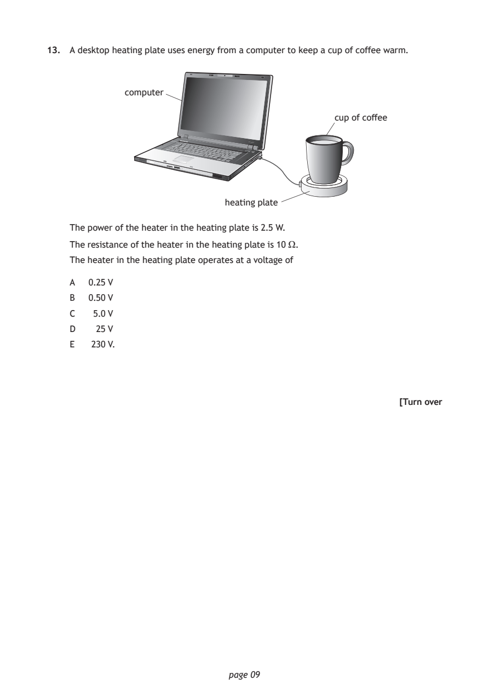
Selectable page text
13. A desktop heating plate uses energy from a computer to keep a cup of coffee warm.
computer
cup of coffee
heating plate
The power of the heater in the heating plate is 2.5 W.
The resistance of the heater in the heating plate is 10 Ω.
The heater in the heating plate operates at a voltage of
A 0.25 V
B 0.50 V
C 5.0 V
D 25 V
E 230 V.
[Turn over
page 09PDF page 10
Section 1, Question 14Section 1, Question 15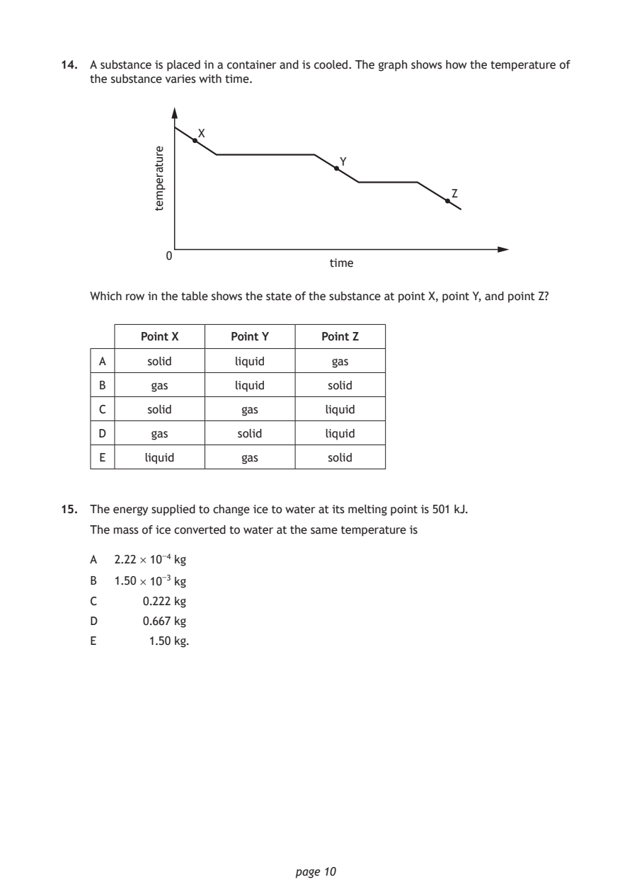
Selectable page text
14. A substance is placed in a container and is cooled. The graph shows how the temperature of
the substance varies with time.
X
Y
Z
0
page 10
erutarepmet
time
Which row in the table shows the state of the substance at point X, point Y, and point Z?
Point X Point Y Point Z
A solid liquid gas
B gas liquid solid
C solid gas liquid
D gas solid liquid
E liquid gas solid
15. The energy supplied to change ice to water at its melting point is 501 kJ.
The mass of ice converted to water at the same temperature is
A 2.22 × 10⁻⁴ kg
B 1.50 × 10⁻³ kg
C 0.222 kg
D 0.667 kg
E 1.50 kg.PDF page 11
Section 1, Question 16Section 1, Question 17Section 1, Question 18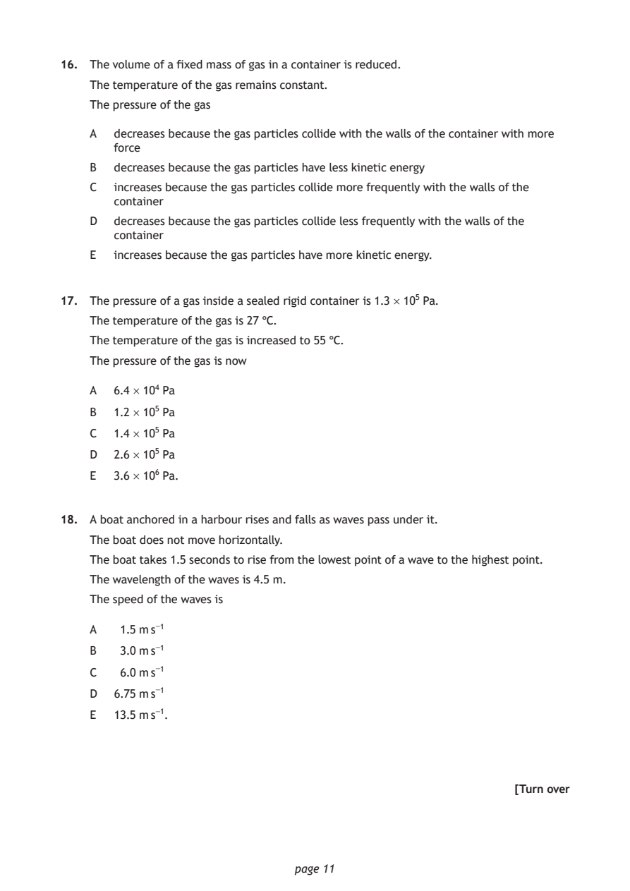
Selectable page text
16. The volume of a fixed mass of gas in a container is reduced.
The temperature of the gas remains constant.
The pressure of the gas
A decreases because the gas particles collide with the walls of the container with more
force
B decreases because the gas particles have less kinetic energy
C increases because the gas particles collide more frequently with the walls of the
container
D decreases because the gas particles collide less frequently with the walls of the
container
E increases because the gas particles have more kinetic energy.
17. The pressure of a gas inside a sealed rigid container is 1.3 × 10⁵ Pa.
The temperature of the gas is 27 °C.
The temperature of the gas is increased to 55 °C.
The pressure of the gas is now
A 6.4 × 10⁴ Pa
B 1.2 × 10⁵ Pa
C 1.4 × 10⁵ Pa
D 2.6 × 10⁵ Pa
E 3.6 × 10⁶ Pa.
18. A boat anchored in a harbour rises and falls as waves pass under it.
The boat does not move horizontally.
The boat takes 1.5 seconds to rise from the lowest point of a wave to the highest point.
The wavelength of the waves is 4.5 m.
The speed of the waves is
A 1.5 m s⁻¹
B 3.0 m s⁻¹
C 6.0 m s⁻¹
D 6.75 m s⁻¹
E 13.5 m s⁻¹.
[Turn over
page 11PDF page 12
Section 1, Question 19Section 1, Question 20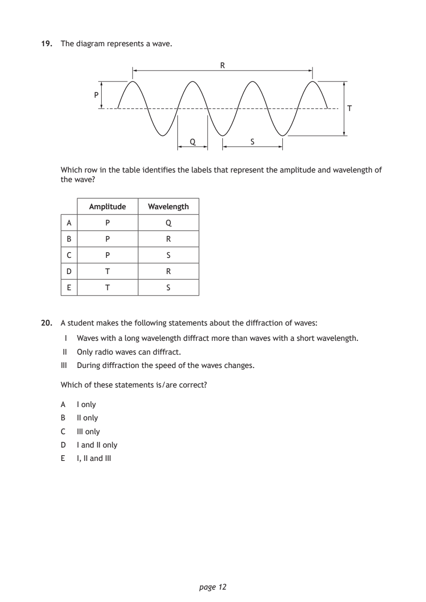
Selectable page text
19. The diagram represents a wave.
R
P
T
Q S
Which row in the table identifies the labels that represent the amplitude and wavelength of
the wave?
Amplitude Wavelength
A P Q
B P R
C P S
D T R
E T S
20. A student makes the following statements about the diffraction of waves:
I Waves with a long wavelength diffract more than waves with a short wavelength.
II Only radio waves can diffract.
III During diffraction the speed of the waves changes.
Which of these statements is/are correct?
A I only
B II only
C III only
D I and II only
E I, II and III
page 12PDF page 13
Section 1, Question 21Section 1, Question 22Section 1, Question 23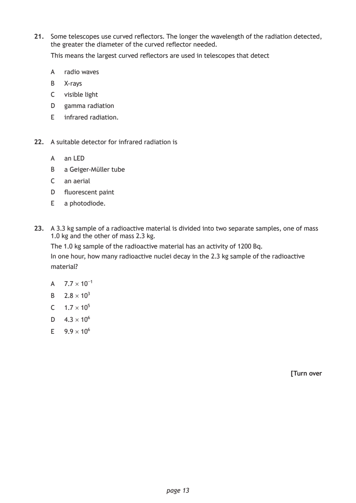
Selectable page text
21. Some telescopes use curved reflectors. The longer the wavelength of the radiation detected,
the greater the diameter of the curved reflector needed.
This means the largest curved reflectors are used in telescopes that detect
A radio waves
B X‑rays
C visible light
D gamma radiation
E infrared radiation.
22. A suitable detector for infrared radiation is
A an LED
B a Geiger‑Müller tube
C an aerial
D fluorescent paint
E a photodiode.
23. A 3.3 kg sample of a radioactive material is divided into two separate samples, one of mass
1.0 kg and the other of mass 2.3 kg.
The 1.0 kg sample of the radioactive material has an activity of 1200 Bq.
In one hour, how many radioactive nuclei decay in the 2.3 kg sample of the radioactive
material?
A 7.7 × 10⁻¹
B 2.8 × 10³
C 1.7 × 10⁵
D 4.3 × 10⁶
E 9.9 × 10⁶
[Turn over
page 13PDF page 14
Section 1, Question 24Section 1, Question 25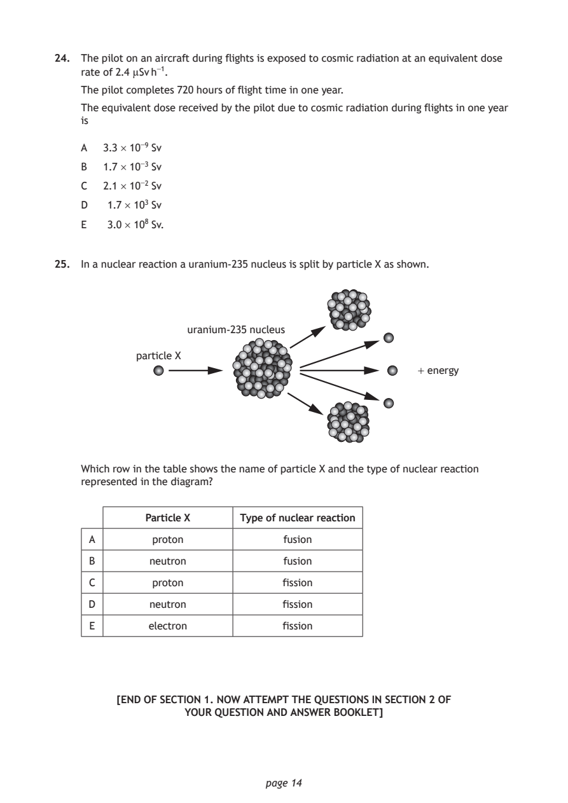
Selectable page text
24. The pilot on an aircraft during flights is exposed to cosmic radiation at an equivalent dose
rate of 2.4 µSv h⁻¹.
The pilot completes 720 hours of flight time in one year.
The equivalent dose received by the pilot due to cosmic radiation during flights in one year
is
A 3.3 × 10⁻⁹ Sv
B 1.7 × 10⁻³ Sv
C 2.1 × 10⁻² Sv
D 1.7 × 10³ Sv
E 3.0 × 10⁸ Sv.
25. In a nuclear reaction a uranium‑235 nucleus is split by particle X as shown.
uranium-235 nucleus
particle X
+ energy
Which row in the table shows the name of particle X and the type of nuclear reaction
represented in the diagram?
Particle X Type of nuclear reaction
A proton fusion
B neutron fusion
C proton fission
D neutron fission
E electron fission
[END OF SECTION 1. NOW ATTEMPT THE QUESTIONS IN SECTION 2 OF
YOUR QUESTION AND ANSWER BOOKLET]
page 14PDF page 15

Selectable page text
[BLANK PAGE]
DO NOT WRITE ON THIS PAGE
page 15PDF page 16

Selectable page text
[BLANK PAGE]
DO NOT WRITE ON THIS PAGE
page 16